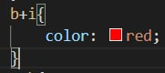
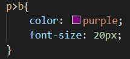
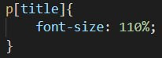
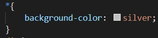

Сусідній селектор

Соседними называются элементы веб-страницы, когда они следуют непосредственно друг за другом в коде документа.
Дочірній селектор

Дочерним называется элемент, который непосредственно располагается внутри родительского элемента.
Селектор атрибута

Селекторы атрибутов отбирают элементы по наличию атрибута или его значению.
Універсальний селектор

Иногда требуется установить одновременно один стиль для всех элементов веб-страницы, например, задать шрифт или начертание текста. В этом случае поможет универсальный селектор, который соответствует любому элементу веб-страницы.
Для обозначения универсального селектора применяется символ звёздочки (*)